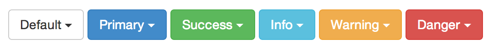

UI Components Review
What is UI Design?
Drop-downs
If too many options...
If too many options...
- Information overload
- Requires scrolling
- Instead, try a text field with auto-complete
If too few options...
- Requires 2 steps from user to view all of only a small amount of information, not worth the extra steps
- In the case of a drop-down used as navigation, there may not be a minimum number of options, but the maximum should still apply
Radio Buttons
- When there aren’t enough options for a drop-down menu (5 or less), but more than 2
- Toggle options, when only one option should be allowed
- Since radio buttons cannot be deselected, offer a void option if applicable
- Require any accompanying labels to be selectable as well
Checkboxes
- Since checkboxes are usually used to denote multiple selection of options, break up large lists of checkboxes with sub-headers
- Use a single checkbox when an option should be on or off, true or false, etc.
- Require any accompanying labels to be selectable as well
Buttons vs. Links
- Links best used inline with text
- Links denote further content
- Buttons denote action like “Submit” or “Go”

Call to Action
Call to Action
- Utilize contrasting colors and whitespace
- Use no more than a few words
- Begin with an action word like "Download" or "Register"
- Large enough to see from a distance, but not so large as to detract attention from the main content on the page
Modals
- To alert users of an error
- To warn users of potentially harmful situations
- To collect data from users
- To remind users to do something before moving on
- To inform users of important information
Popovers/Tooltips
- If a button, label, or icon has little to no descriptive text or needs some short explanation, then a tooltip works well for this
- Avoid if text used in your tooltip is redundant of a label
- Tooltips take up real-estate, and too many can cause clutter and become annoying
Pagination
- Provide large, clickable areas
- Identify the current page
- Provide “Next” and “Previous” links
- Use “First” and “Last” links for longer lists of pages
Breadcrumbs
Breadcrumbs
- Use breadcrumb navigation for large websites and websites that have hierarchically arranged pages
- You shouldn’t use breadcrumbs for single-level websites that have no logical hierarchy or grouping.
Lists vs. Grids
- Text menus are more efficient
- Grids require imagery, but images help users differentiate
Tabs
- Use tabs to alternate between views within the same context, not to navigate to different areas
- Do not split content between tabs that requires the user to toggle back and forth
- Avoid multiple rows of tabs

Accordion
- Use when you want the benefits of a normal sidebar menu, but do not have the space to list all options
- Use when there are more than 2 main sections on a website each with 2 or more subsections, less than 10 sections
References
- patterntap.com
- getbootstrap.com
- awwwards.com
- smashingmagazine.com